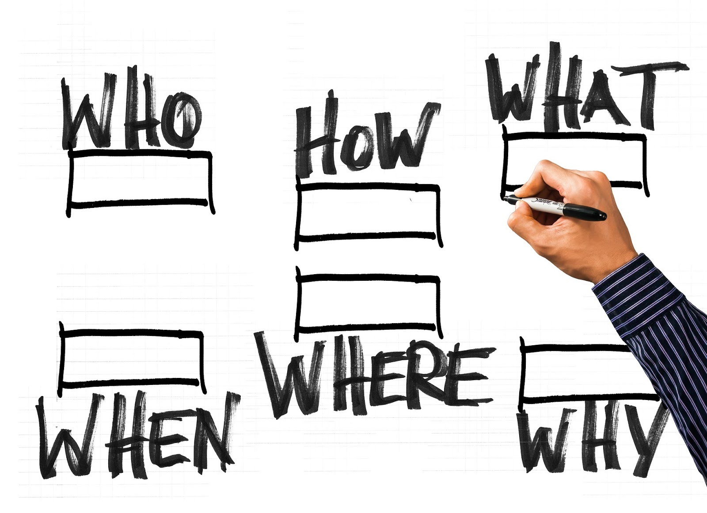

What Is a Communication Plan?
A communication plan is a specific strategy which defines your company’s audiences as well as the messages you need to communicate to them in order to achieve your mutual business goals. In simple terms, it is a document that outlines when, how, and why you’ll communicate with your audiences.
Here are some basic questions a good communication plan should aim to answer:
- What is the message you wish to communicate to your target audience?
- What details do you want to share with them about your company?
- What’s your company’s mission?

8 Steps to a Perfect Communication Plan (Template)
1. Clearly identify your mission statement
Your company’s mission statement should clearly communicate what it is that you do. It’s usually a short sentence or paragraph that explains to the world why it is that your business exists.
Your mission statement states the ultimate goal your business aims to achieve for your customers. So, the first step in the creation of your communication plan should be re-emphasizing your own mission statement. Here are several examples of mission statements of some major companies to get you inspired:
- Starbucks – “To inspire and nurture the human spirit – one person, one cup and one neighborhood at a time.”
- LeadQuizzes – “Make marketing easier.”
- Nike: “To bring inspiration and innovation to every athlete in the world.”
2. Define your business goals
The next step would be to identify your business goals. In other words – what is it that your company needs to do or what goals it needs to achieve in order to consider your business dealings a success?
Every goal you set is expected to contribute to your business’ overall objectives and should be a step forward to fulfilling the promise stated in your mission statement. Your business goals should be listed (and elaborated) in your communication plan template.
https://www.communications-major.com/what-is-communications/
Bianca Delos Reyes
What is Communications Studies?
According to the National Communication Association, communication is a diverse discipline relevant to social scientists, cultural studies scholars, and humanists alike.
As a mode of intellectual inquiry, communication studies seeks to understand political, cultural, and social processes, create meaning and organize behavior. The study of communications cultivates our critical thinking and speaking/writing skills, and it allows us to comprehend and adapt to a changing world. Communications studies provide us with a human perspective on the near endless expressions of social interaction.
Our ever-expanding quest to understand how we communicate has resulted in a number of areas of study within communications:
- Applied Communication: The study of communications theory, research, and best practices geared toward communication for practical purposes
- Communication Education: The study of communications in the classroom or similar pedagogical contexts
- Communication Theory: The study of how communications impacts human social interaction
- Electronic Media: The study of forms of media, including radio, television, media technology, and web design, among others
- Health Communication: The study of communication in regards to health education and the work of health professionals
- International and Intercultural Communication: The study of communication across cultures
- Interpersonal Communication: The study of communication behaviors in personal relationships
- Language and Social Interaction: The study of verbal and nonverbal behaviors in social interactions
- Legal Communication: The study of communications in the legal system
- Organizational Communication: The study of how organizations analyze communication and social interaction
- Public Address: The study of speakers and speeches
- Semiotics and Philosophy of Communication: The study of communications in relation to philosophical frameworks
There are many types of terms used when describing the study of communications within a business or organization:
- Internal communications: Communication within the business
- External communications: Communication between a business and outside individuals/organizations/businesses
- Vertical communications: Communication between members of a business or organization at different levels of hierarchy
- Horizontal communications: Communication between members of a business or organization at the same level of hierarchy
Internal communications within a business include:
- Maintaining and improving the morale of employees
- Giving orders to workers
- Prescribing methods and procedures
- Announcing policies and organizational changes
- Informing management
External communications within a business include:
- Selling and obtaining goods and services
- Reporting to the government and shareholders on the business’ financial condition and operations
- Creating a favorable climate for conducting business
https://www.communications-major.com/what-is-communications/
Bianca Delos Reyes
The Essential Components of Communication
Communication is a continuous, two-way process, which includes a message that must be conveyed through a medium to a recipient. The recipient must understand the message and respond within a specific time frame. Therefore, communication studies involve a process that can be broken down into a series of essential components, which include:
Source: The source is the person who imagines, creates, and sends the message.
Message: The message is the stimulus or meaning produced by the source for the receiver or audience.
Channel: The channel is the way in which a message travels between the source and the receiver.
Receiver: The receiver receives the message from the source and analyzes and interprets the message—both intended and unintended—from the source.
Feedback: Feedback is the verbal and/or nonverbal response to a message.
Environment: The environment is the physical and psychological aspects of the communication’s context.
Context: Context involves the setting, scene, and expectations of the individuals involved.
Interference: Interference is anything that blocks or changes the source’s intended meaning of the message.
https://www.communications-major.com/what-is-communications/
Bianca Delos Reyes